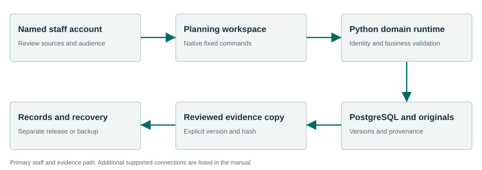

Connect policy, analysis and municipal progress.
Planning retains adopted policy imports and neighborhood applicability, saved staff analyses, reviewed snapshots, municipal initiatives and amendment history. An analysis or amendment draft does not adopt policy.
What the workflow delivers
- Import adopted policy. Open Policy library. Preview jurisdiction, adoption/source dates, policy IDs, neighborhood applicability and originals, then confirm the complete source bundle. Retain the previous revision.
- Create or reopen an analysis. Open Analyses and select the project. Use Next page when the loaded page does not contain the saved work. Enter the proposal, analysis and private staff notes.
- Select policies and evidence. In Policies & evidence select exact policy revisions and applicable neighborhood context. Record supporting, conflicting or uncertain considerations. Select permitted Meetings or Zoning evidence with its expected hash.
- Save and reconcile. Use Save draft before navigating or signing out. When another revision exists, reopen it and reconcile your edits. Do not resubmit against a guessed revision identifier.
Connected evidence
Selects Meetings and Zoning evidence. Provides permitted reviewed snapshots to Records. Source selection is permission- and hash-checked and is not automatic writeback.
Know the beta boundary
Existing initiative/amendment persistence is included. A draft amendment does not change an adopted source revision. Historical standalone sample pages are not the installed staff workspace. Analysis lists and project filters operate on loaded pages; use pagination to reach additional records.
Where the evidence goes

Selects Meetings and Zoning evidence. Provides permitted reviewed snapshots to Records. Source selection is permission- and hash-checked and is not automatic writeback.
Selected staff workflows passed.
The signed private candidate passed normal first-run and selected synthetic workflows in a fresh Windows Sandbox profile. This is not a claim that every screen, vendor, upgrade or city equipment configuration has been certified.
Read the exact acceptance and limits →Ready to evaluate?
Begin with the manual and the signed candidate linked above. Configure the chosen test site and have its staff review source applicability and run the existing workflows.